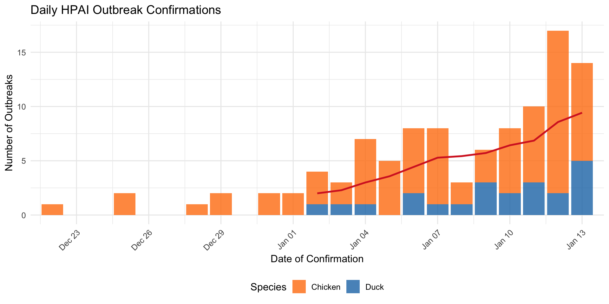
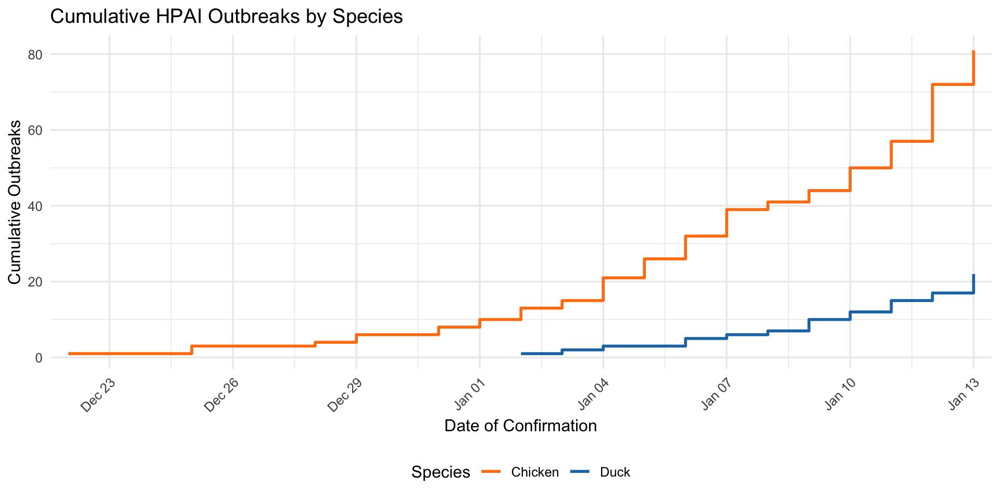
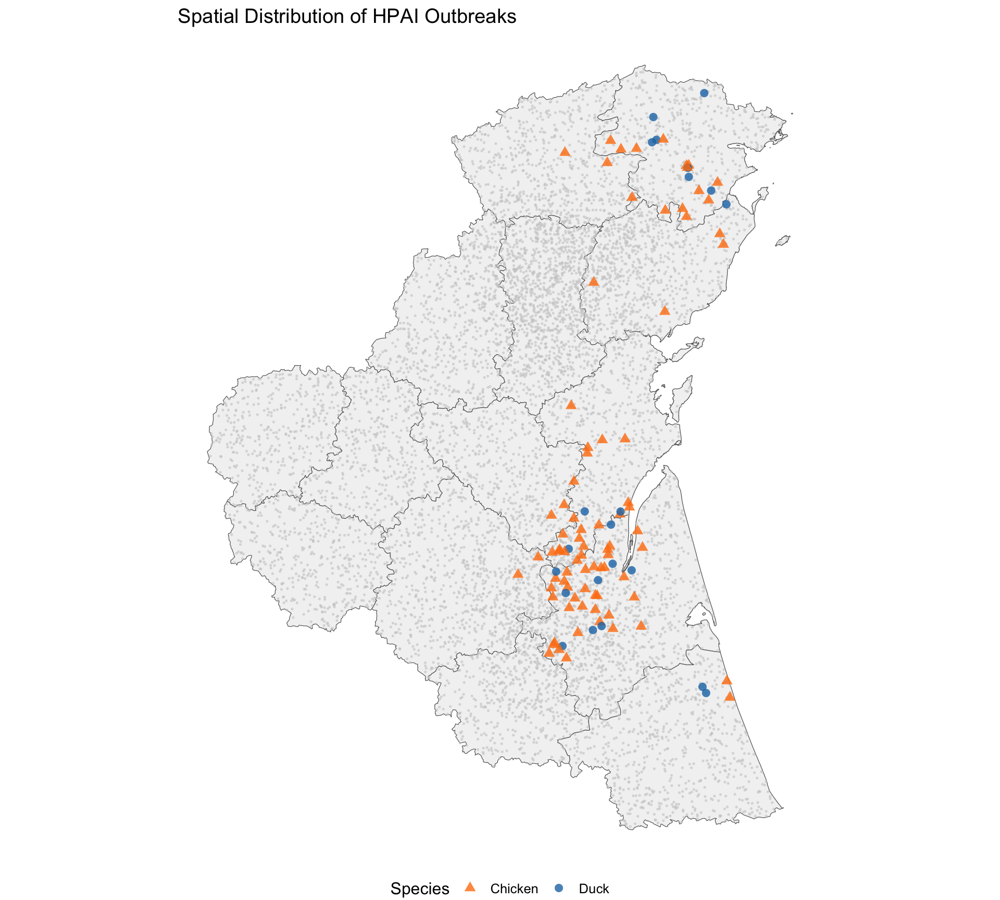
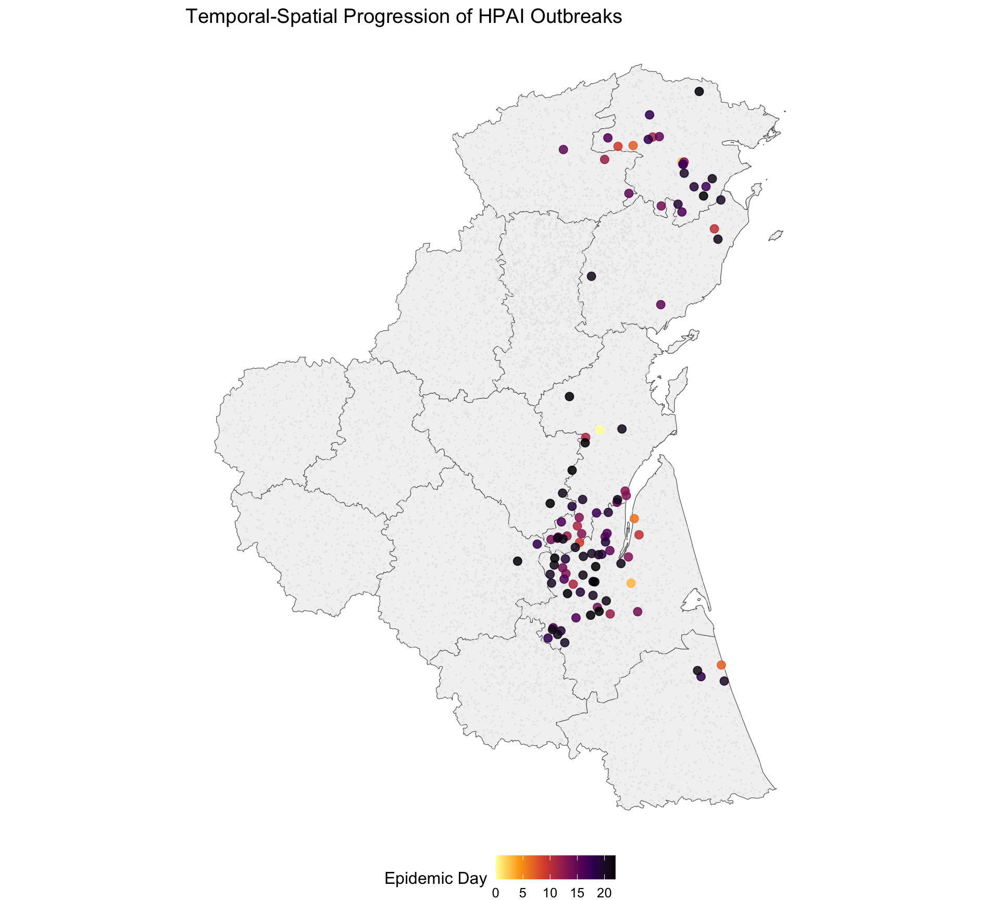
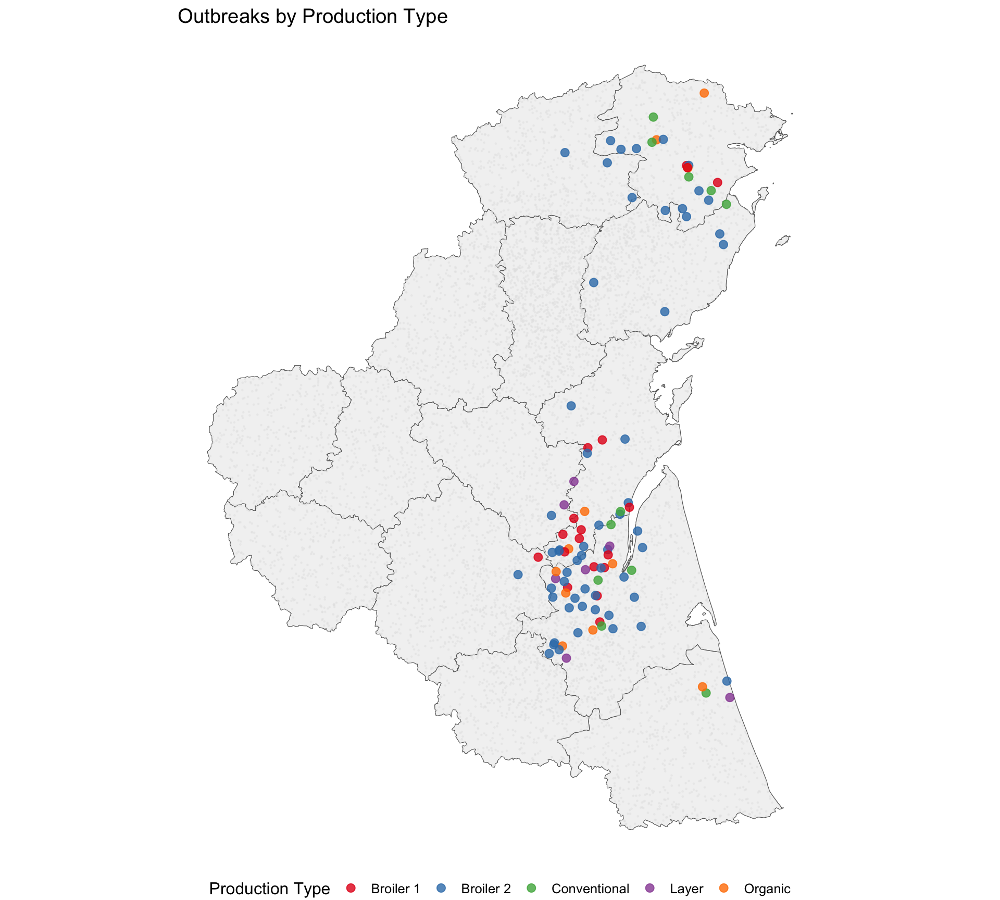
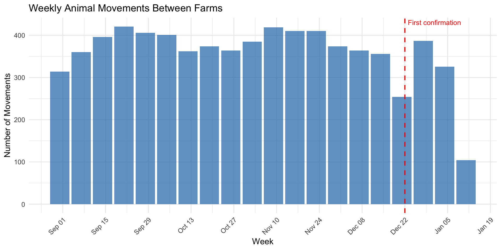
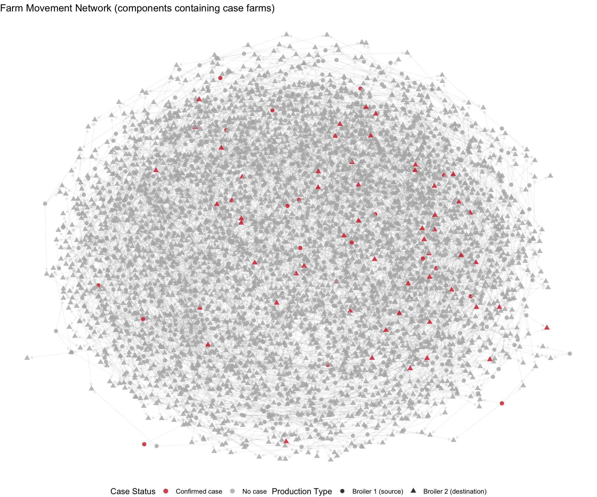
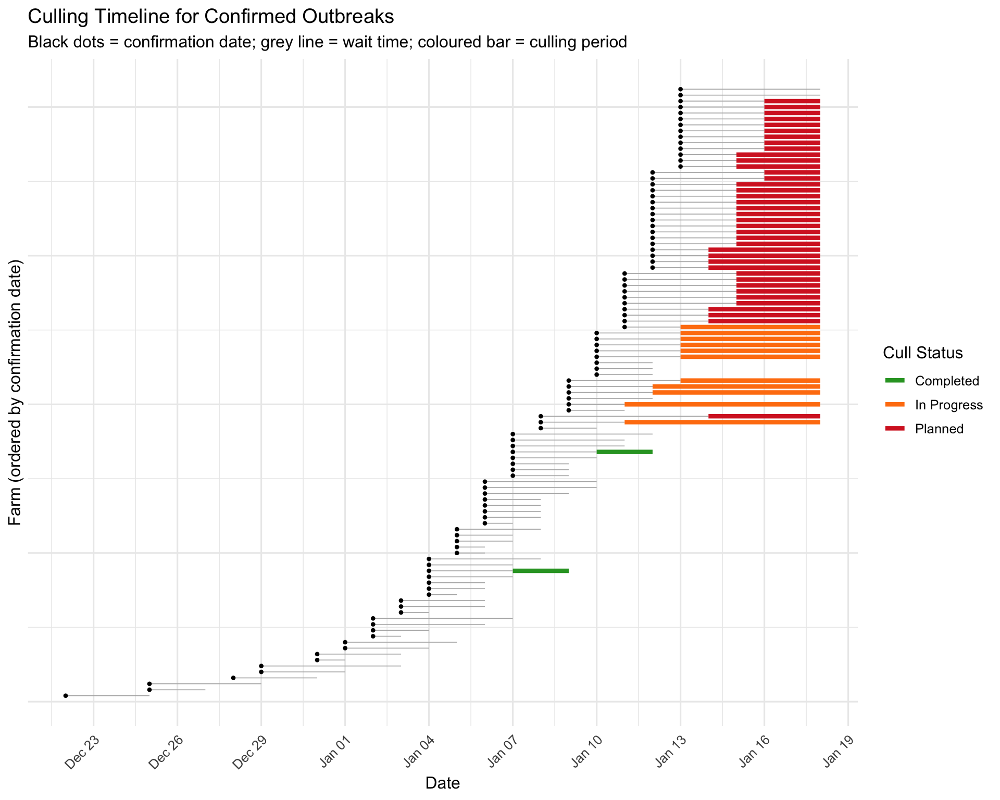

| Species | Production Type | Total Farms | Outbreaks | Attack Rate (%) |
|---|---|---|---|---|
| Chicken | Broiler 1 | 1248 | 18 | 1.4 |
| Chicken | Broiler 2 | 2746 | 56 | 2.0 |
| Chicken | Layer | 441 | 7 | 1.6 |
| Duck | Conventional | 3691 | 11 | 0.3 |
| Duck | Organic | 1034 | 11 | 1.1 |
| Chicken | All | 4435 | 81 | 1.8 |
| Duck | All | 4725 | 22 | 0.5 |
| Total | All | 9160 | 103 | 1.1 |
HPAI Outbreak: General Epidemic Description
Phase 1: December 20, 2025 – January 13, 2026
Outbreak Overview
As of January 13, 2026, a total of 103 HPAI-confirmed outbreaks have been reported across 8 counties and 59 districts since the index case on December 22, 2025 (22 days). Both species present in the poultry population (duck, chicken) are affected. Of the 103 confirmed farms, 51 have completed culling, 11 are in progress, and 41 are planned.
Distribution by Species and Production Type
Outbreak counts
Capacity affected
| Species | Production Type | Outbreaks | Total Capacity | Mean Capacity / Farm |
|---|---|---|---|---|
| Chicken | Broiler 1 | 18 | 89,916 | 4,995 |
| Chicken | Broiler 2 | 56 | 122,505 | 2,188 |
| Chicken | Layer | 7 | 125,448 | 17,921 |
| Duck | Conventional | 11 | 168,927 | 15,357 |
| Duck | Organic | 11 | 9,381 | 853 |
| Total | All | 103 | 516,177 | 5,011 |
Detection method
| Species | Contact Tracing | Passive | Preshipment |
|---|---|---|---|
| Chicken | 1 | 74 | 6 |
| Duck | 0 | 22 | 0 |
| Total | 1 | 96 | 6 |
Epidemic Timeline
Daily epidemic curve

Cumulative epidemic curve

Incidence by epidemiological week
| Week | Period | Duck | Chicken | Week Total | Cumulative |
|---|---|---|---|---|---|
| 1 | Dec 22 – Dec 28 | 0 | 4 | 4 | 4 |
| 2 | Dec 29 – Jan 04 | 3 | 17 | 20 | 24 |
| 3 | Jan 05 – Jan 11 | 12 | 36 | 48 | 72 |
| 4 | Jan 12 – Jan 13 | 7 | 24 | 31 | 103 |
Spatial Distribution
Outbreak map

Outbreaks by county
| County | Total Farms | Outbreaks | Attack Rate (%) |
|---|---|---|---|
| Berks | 1151 | 44 | 3.8 |
| Susquehanna | 572 | 22 | 3.8 |
| Indiana | 515 | 20 | 3.9 |
| Allegheny | 820 | 5 | 0.6 |
| Luzerne | 663 | 4 | 0.6 |
| Lancaster | 654 | 3 | 0.5 |
| Lycoming | 469 | 3 | 0.6 |
| Cumberland | 854 | 2 | 0.2 |
Temporal-spatial progression

Production type map

Movement Network
The movement dataset records 7,187 animal movements between 3,994 farms from September 01, 2025 to January 13, 2026. The network has a directed structure: 1,248 source farms (all broiler_1) ship to 2,746 destination farms (all broiler_2). This represents a broiler supply chain. Duck farms (conventional and organic) are entirely absent from the movement records.
Network summary
| Metric | Value |
|---|---|
| Total movements recorded | 7,187 |
| Date range | Sep 01, 2025 – Jan 13, 2026 |
| Unique source farms (all broiler 1) | 1,248 |
| Unique destination farms (all broiler 2) | 2,746 |
| Total farms in network | 3,994 |
| Case farms in network | 74 of 103 |
| — as source (broiler 1) | 18 |
| — as destination (broiler 2) | 56 |
Movement volume over time

Case farm involvement
| Metric | Count |
|---|---|
| Movements FROM case farms | 88 |
| — before confirmation | 85 |
| — on day of confirmation | 3 |
| — after confirmation | 0 |
| Movements TO case farms | 165 |
| — before confirmation | 165 |
| Direct case → case movements | 3 |
Network visualisation

Culling Response
Confirmed case culling
| Type | Completed | In Progress | Planned | Total |
|---|---|---|---|---|
| Confirmed outbreaks | 51 | 11 | 41 | 103 |
| Preventive culls | 11 | 1 | 40 | 52 |

Time from confirmation to culling
| N | Mean | Median | Min | Max |
|---|---|---|---|---|
| 103 | 2.9 | 3 | 1 | 6 |
Preventive culling
A total of 52 preventive culls have been ordered on farms not (yet) confirmed positive. These target farms identified through proximity or epidemiological links to confirmed cases.
| Species | Production Type | Planned | Completed | In Progress | Total |
|---|---|---|---|---|---|
| Duck | Conventional | 20 | 4 | 1 | 25 |
| Chicken | Broiler 2 | 7 | 3 | 0 | 10 |
| Chicken | Broiler 1 | 8 | 0 | 0 | 8 |
| Duck | Organic | 4 | 4 | 0 | 8 |
| Chicken | Layer | 1 | 0 | 0 | 1 |
Questions arising from the data
The descriptive patterns above raise several questions for further investigation:
Is the epidemic accelerating, stabilising, or decelerating? The weekly incidence table and epidemic curve provide a basis for this assessment. Growth rate estimation (e.g., doubling time, effective reproduction number) would quantify the trajectory more precisely — see the companion temporal analysis for these estimates.
Why are chicken farms, particularly broiler type 2, disproportionately affected? Attack rates differ substantially across species and production types. Possible explanations include spatial confounding (chicken farms may be concentrated near the outbreak focus), differences in biosecurity practices by production type, differences in susceptibility or clinical presentation affecting detection probability, or transmission via production-specific supply chains. Disentangling these requires spatial risk factor analysis.
Does the broiler supply chain explain the concentration of cases in broiler 2 farms? The movement network is a directed broiler 1 → broiler 2 supply chain. Broiler 2 farms have the highest attack rate and receive animals from broiler 1 farms, some of which are also confirmed cases. However, only 3 direct case-to-case movements were recorded. Further analysis could quantify whether farms with more incoming movements, or movements from case farms specifically, had higher infection risk — controlling for spatial proximity.
Is passive surveillance sufficient? The overwhelming majority of detections are through passive surveillance (clinical suspicion). The low contribution of preshipment testing and contact tracing raises the question of whether subclinical or early-stage infections are being missed, and whether the true extent of the epidemic is larger than confirmed cases suggest.
Are culling operations keeping pace with new detections? The cull status data show a growing backlog of planned and in-progress culls. Whether delays in depopulation are contributing to onward transmission is a question for operational and transmission modelling.
Where is the epidemic likely to spread next? The temporal-spatial progression suggests outward expansion from an initial focus. Identifying the leading edge and farms at highest risk of future infection would inform targeted surveillance and preventive measures.
Limitations and analytical choices
Data not included in this report
Mortality ledger data: Individual farm mortality records (PDF format) are available for a subset of farms. These could provide insight into within-farm dynamics and time from infection to detection, but were not incorporated here.
Farm activity data: Production activity logs (
activity.csv) could contextualise which farms were actively stocked at the time of the outbreak, but were not used in this descriptive analysis.High-risk zone and wetland layers: Geospatial data on the designated high-risk zone (
hrz_32626.geojson) and wetland/water body coverage (clc_32626.geojson) are available and could add context to the spatial maps, but were omitted to keep the maps focused on outbreak distribution.
Analytical limitations
Attack rates are crude: The attack rates presented use total registered farms as the denominator. Not all farms may have been actively stocked during the outbreak period, so true attack rates among at-risk farms may differ.
No adjustment for spatial confounding: Differences in attack rates across species and production types may be partly or wholly explained by the geographic concentration of the outbreak rather than true biological differences.
Epidemic curve right-truncation: The most recent days of the epidemic curve are likely incomplete due to delays between suspicion and confirmation. The apparent case count in the final days may underestimate the true incidence.
Movement network is descriptive only: The movement section presents network structure and case involvement but does not model whether movements are associated with infection risk. Temporal precedence (movements before confirmation) does not establish causation. The network also only covers chicken broiler farms, so transmission pathways for duck and layer farms remain unobserved.
No formal statistical testing: This report is purely descriptive. Differences in attack rates have not been tested for statistical significance, and no regression or spatial modelling has been applied.